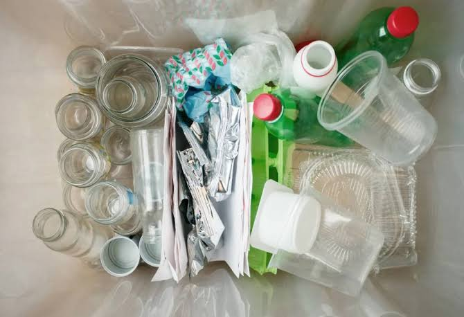
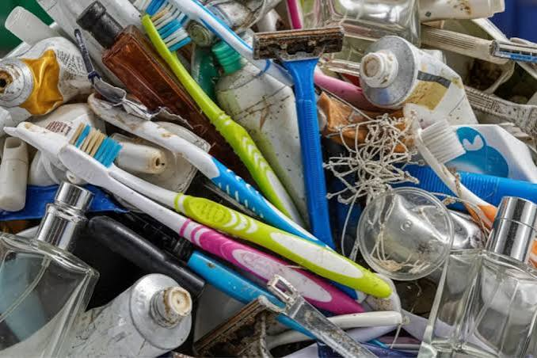

CLASIFICACIÓN DE LOS RESIDUOS
RESIDUOS ORGÁNICOS
Los residuos orgánicos son desechos de origen biológico, es decir, que alguna vez tuvieron vida o formaron parte de un ser vivo, tal es el caso de las ramas y hojas de los árboles y plantas, las cáscaras de las diferentes frutas y todo residuo que resulte de la elaboración de los alimentos, restos de comida y jardín que se producen diariamente en el hogar y en establecimientos comerciales, servilletas o manteles de papel con restos de materia orgánica, entre otros.
Estos residuos están expuestos a un proceso de descomposición y por caso deberán ser sometidos a un tratamiento especial porque pueden portar enfermedades o algún contaminante que afecte a la salud del ambiente y de las personas.
INORGÁNICOS RECICLABLES
Los residuos inorgánicos agrupan a todos los residuos que no tienen procedencia biológica. En cambio, su origen emana de forma artificial. Se trata de residuos no biodegradables que no logran reintegrarse al ecosistema naturalmente.
Si lo hacen, emiten sustancias nocivas al medio ambiente.
Los residuos inorgánicos provienen de productos de consumo masivo.
La mayoría de los residuos inorgánicos tienen un alto potencial para ser reciclados y volver a reintegrarse en la tierra como materia prima. Es el caso del vidrio, los neumáticos, componentes de los residuos eléctricos y electrónicos y los plásticos.
MANEJO ESPECIAL Y PELIGROSOS
Los Residuos de Manejo Especial (RME), son definidos en la Ley General para la Prevención y Gestión Integral de los Residuos (LGPGIR) como aquellos generados en los procesos productivos,
que no reúnen las características para ser considerados como peligrosos o como residuos sólidos urbanos, o que son producidos por grandes generadores de residuos sólidos urbanos. Así mismo en esta ley se establecen las categorías definidas de los RME.
GUÍA RÁPIDA DE SEPARACIÓN
ORGÁNICOS: Restos vegetales y comida

RECICLABLES: Plástico, papel y metal

NO RECICLABLES: Sanitarios y envolturas sucias